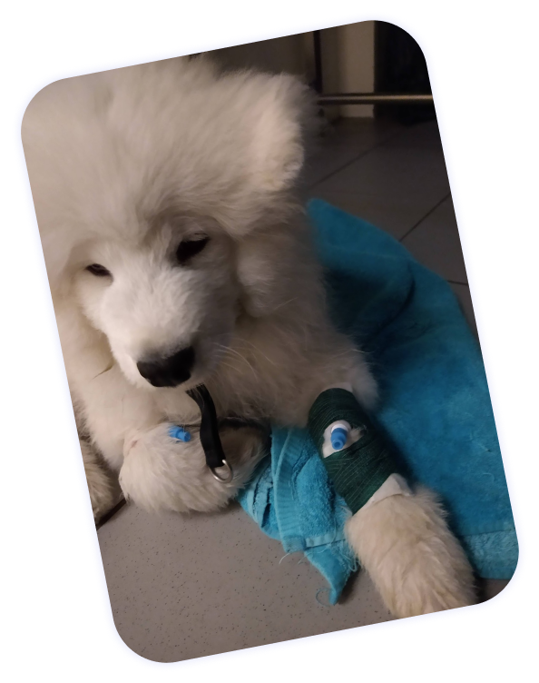
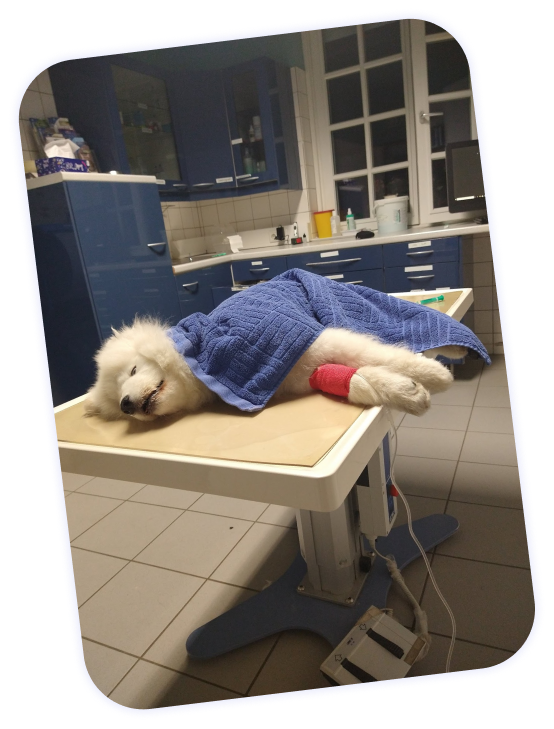

This is Buddy, our polar bear. He loves digging, carrying sticks,
chasing leaves and pretty much every human being or doggo out there.
Buddy is an awesome puppy, but he is also very sick. At 16 weeks old he
got diagnosed with a congenital portosystemic shunt, and
without surgery he might die in just a few months.
Our 💙 boy 💛 needs 💜 help 💛


2.255,17€
Tierarztpraxis Altona,
Tierklinik Norderstedt
already spent between exams, late night vet visits and
hospitalizations, just trying to diagnose his disease.
1.500,00€
Tierklinik Norderstedt
estimate for the scans, further exams and preparations needed for the surgery.
4.000,00€
Universität Gießen
estimate for having the liver shunt surgery done plus a short clinic stay afterwards.
1.800,00€
Universität Gießen
estimate for any complications after surgery.
It’s been tough. He is suffering a lot and so are we. We don’t
know if we can save him, but we want to try our best.
And we could use some help.


 Tierarztpraxis Altona,
Tierklinik Norderstedt
Tierarztpraxis Altona,
Tierklinik Norderstedt


 What is a portosystemic shunt?
What is a portosystemic shunt? Buddy, Eduarda & Flo
Buddy, Eduarda & Flo